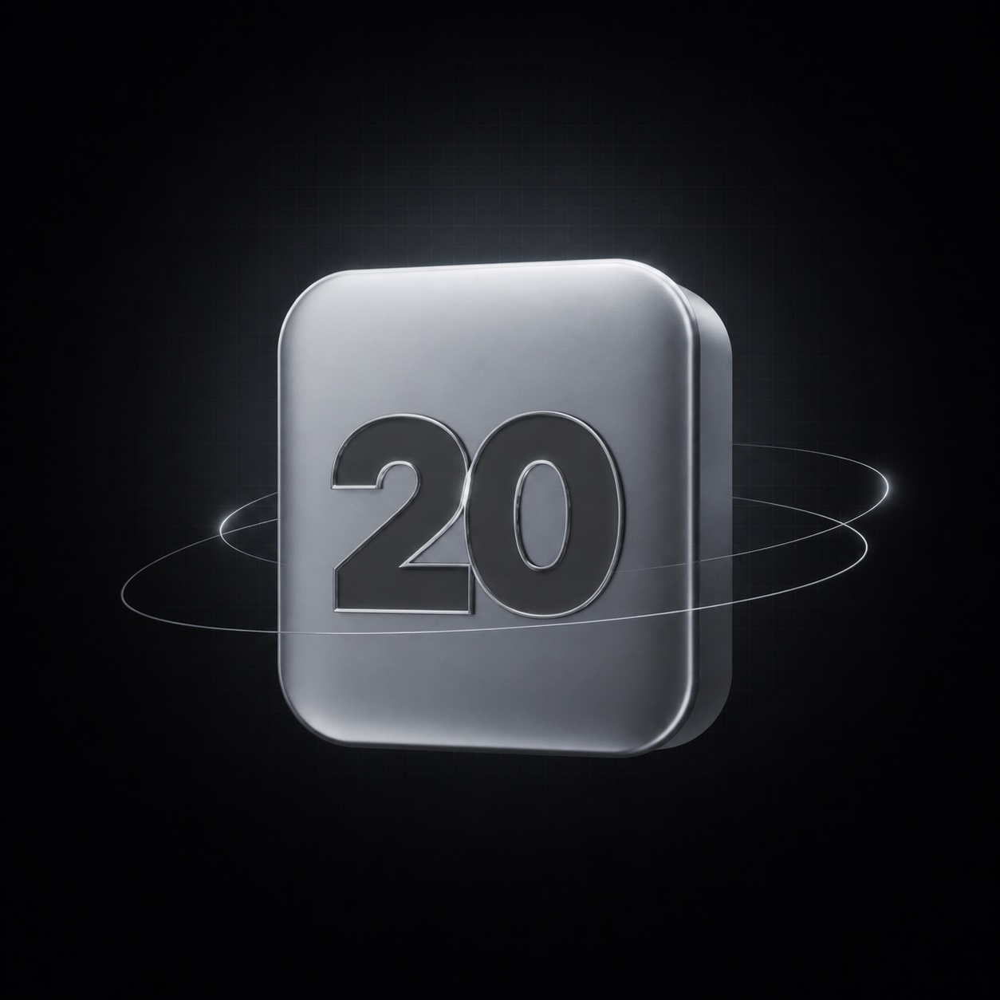

Learner portal · Demo
Build. Prove. Ship.
- Enroll
- Learn
- Build
- Publish PROXY
Class 01 · AI Driver
Meet your AI team
Map the right model to the right task. Your first build is an AI tool map.
Open class outline →
Class roadmap
Explore the twenty builds by phase. Class materials and assessed submissions are unavailable in this demo.
Builds & mentor feedback
In the course, each build contributes to your venture dossier. Attendance, proof, mentor feedback and proficiency are private learner records.